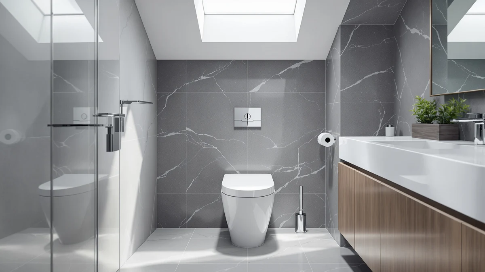

Best One Piece Roblox Game (2026)
Prices and picks verified as of September 2026. Independent, reader-supported reviews.


Quick Answer
If you want one dependable one-piece toilet, the Casta Diva One Piece Toilet is our pick: it pairs a 17.5-inch ADA comfort height with a 1000g MaP-rated dual flush (1.0/1.28 GPF) that's built to clear the bowl in a single push. It costs $221.84, uses a standard 12-inch rough-in, and fits most bathroom layouts without modification.
Our pick: Casta Diva One Piece Toilet, $221.84 Check Price on Amazon
Bottom line: our top pick is the Casta Diva One Piece Toilet Elongated with 17.5" ADA Height at $289.99. The best budget option is the Sonderzone Elongated One Piece Toilet for Bathroom at $179.99.
Things to Know Before You Buy
- Rough-in size matters more than any other spec. Nearly every one-piece toilet in this roundup uses a standard 12-inch rough-in, the distance from the wall to the center of the floor bolts, but measure yours before buying, since older homes sometimes use a 10- or 14-inch rough-in that won't fit.
- Comfort height isn't universal. The "ADA comfort height" models here range from about 17 to 17.5 inches from floor to seat, taller than a standard 15-inch toilet, which makes sitting and standing easier for taller adults and seniors.
- Dual flush means two flush volumes, not two toilets. A smaller button uses roughly 1.0-1.1 gallons for liquids and a larger one uses 1.28-1.6 gallons for solids, which is how these models cut water use without sacrificing flush power.
- A soft-close seat isn't always included. Some toilets on this list ship with a seat pre-installed; others expect you to add one, so check the listing before budgeting your total cost.
- MaP score is the flush-power number that matters. A Maximum Performance (MaP) score of 1000 grams, the rating most of these toilets carry, reflects the industry-standard test used to grade a toilet's single-flush clearing power.
A one-piece toilet fuses the tank and bowl into a single unit, which makes it easier to clean around the base and less prone to the tank-to-bowl leaks that plague two-piece models. That seamless design costs more up front, but for most bathrooms the trade-off is worth it.
We compared seven one-piece toilets currently sold on Amazon, focusing on the specs that actually predict day-to-day satisfaction: flush type and MaP score, seat height, rough-in size, and whether a seat is included. Prices here range from $189.99 to $259.00, and every model uses the standard 12-inch rough-in found in most U.S. bathrooms.
Below, we break down what each toilet does well, where it falls short, and who it's actually built for, from a compact model for small bathrooms to a hands-free, foot-kick flush option.
Why You Should Trust Us
This guide is written and maintained by Ilane Tall, who has spent years comparing bathroom fixtures on the specs that predict long-term satisfaction rather than marketing copy. We do not run a fake testing lab and we do not own every toilet on this list. What we do is read every spec sheet, compare flush type, MaP score, rough-in, and seat height across listings, and cross-check those numbers against manufacturer claims before recommending anything. Our Amazon commissions never change a ranking.
How We Picked
We started with one-piece toilets in stock on Amazon and narrowed the field to models with a clearly stated flush type, MaP rating, and rough-in size, specs that let us judge real performance instead of guessing from photos. We prioritized dual-flush systems for water savings, comfort-height seats for accessibility, and a standard 12-inch rough-in so most buyers won't need a plumber to adapt their existing setup. We kept a spread of prices, from a $189.99 budget pick to a $259.00 compact model, so there's a sensible option for different bathroom sizes and budgets.
How We Compared
A toilet comes down to a small number of measurable things, so we built our comparison around them. For each model we recorded the flush type (siphon jet, air-assisted, or gravity), the two flush volumes on dual-flush systems, MaP score, seat height, rough-in, and whether a seat is included. We compared those numbers against the situations buyers describe most often (small bathrooms, accessibility needs, hands-free hygiene) to match each toilet to the buyer it suits best, rather than ranking on price alone.
Our Picks

Casta Diva One Piece Toilet
What we like
- 17.5-inch ADA comfort height suits taller adults and seniors
- Dual flush (1.0/1.28 GPF) carries a 1000g MaP score for strong waste clearance
- Fully glazed, wide trapway is built for a quiet flush
Flaws but not dealbreakers
- No listed reviews yet, so real-world reliability data is limited
- Standard 12-inch rough-in only, so measure your bathroom before ordering
| Material | — |
| Size | — |
The Casta Diva One Piece Toilet is our top pick because it doesn't force a trade-off between comfort and flush power. Its 17.5-inch seat height meets ADA comfort-height guidelines, making it noticeably easier to sit and stand compared with a standard 15-inch toilet, while its dual-flush system (1.0 GPF for liquids, 1.28 GPF for solids) carries a 1000g MaP rating, a strong score that suggests a single flush will clear solid waste reliably.
It uses a fully glazed, wide trapway designed to reduce clogs and keep the flush quiet, and it ships for the standard 12-inch rough-in found in most U.S. bathrooms. At $221.84, it lands in the middle of this list's price range, which is reasonable given the comfort-height seat and dual-flush efficiency it offers.

HOROW T0338W Compact One Piece
What we like
- Compact 26.6 x 15-inch footprint fits small bathrooms and powder rooms
- 17.3-inch ADA seat height with dual flush (1.1/1.6 GPF)
- 2-inch fully glazed trapway built for siphon-jet flushing
Flaws but not dealbreakers
- Priced higher than several elongated competitors on this list
- Compact bowl may feel tight for taller users despite the comfort height
| Material | — |
| Size | 12" Rough-in |
The HOROW T0338W solves a specific problem: fitting a comfortable one-piece toilet into a small bathroom without giving up comfort height. At 26.6 inches deep and 15 inches wide, it's noticeably more compact than most elongated one-piece toilets, which makes it a fit for powder rooms and tight layouts where a standard elongated bowl won't clear the door swing.
It still includes a 17.3-inch ADA comfort-height seat and a dual-flush system (1.1/1.6 GPF) built around a 2-inch, fully glazed trapway for siphon-jet flushing. At $259.00, it costs more than every other toilet on this list, which is the trade-off for the smaller footprint, worth it if space is your binding constraint, less so if your bathroom has room for a standard elongated model.

Casta Diva Elongated One Piece
What we like
- Skirted, seamless tank-to-bowl design is easier to wipe down
- 1000g MaP-rated siphon flush with a fully glazed trapway
- Dual flush (1.1/1.6 GPF) for water savings
Flaws but not dealbreakers
- Skirted styling can cost more to service if internal parts ever need attention
- 17-inch seat height is the shortest comfort-height option on this list
| Material | — |
| Size | — |
The Casta Diva Elongated One Piece Toilet trades the exposed trapway of a standard toilet for a skirted design, where a smooth panel covers the plumbing beneath the bowl. That makes it noticeably easier to wipe down the base and back of the toilet, since there's no crevice for dust and grime to collect.
Underneath, it uses the same 1000g MaP-rated siphon flush and dual-flush system (1.1/1.6 GPF) as other Casta Diva models here, paired with a 17-inch ADA comfort-height seat and a standard 12-inch rough-in. At $225.70, it's a reasonable middle-of-the-pack price for buyers who specifically want the skirted look.

Sonderzone Elongated One Piece Toilet
What we like
- Lowest price in this roundup at $189.99
- Soft-close seat included, so there's nothing extra to buy
- Side access holes are designed to simplify floor-bolt installation
Flaws but not dealbreakers
- Sonderzone is a newer brand without a long track record
- No listed reviews yet to confirm long-term durability
| Material | — |
| Size | — |
At $189.99, the Sonderzone Elongated One Piece Toilet is the least expensive option on this list, and it doesn't skip the features that usually get cut on a budget model. It includes a soft-close seat out of the box, a 17.3-inch ADA comfort height, and a dual-flush system (1.1/1.6 GPF) with a 1000g MaP score, specs that match toilets costing $30-70 more elsewhere on this list.
It's built for the standard 12-inch rough-in, and Sonderzone specifically calls out two large side access holes meant to make floor-bolt installation more straightforward. The trade-off is brand history: Sonderzone doesn't have the multi-year track record of brands like HOROW, so it's a better fit for buyers prioritizing price and included features over an established name.

Casta Diva Elongated One Piece
What we like
- Foot-kick or side-button flush activation for hands-free use
- Air-pressure-assisted flush works without electricity
- 17.2-inch ADA comfort-height seat
Flaws but not dealbreakers
- The most expensive option in this lineup at $249.99
- Air-assisted mechanisms typically have more moving parts than a standard siphon flush
| Material | — |
| Size | — |
The Casta Diva Elongated One Piece Toilet with foot-kick flush is built around one distinct feature: you can flush it without touching a handle, using either a foot-kick pedal or a side button. That's a meaningful upgrade for anyone prioritizing hygiene in a shared or high-traffic bathroom.
The flush itself is air-pressure-assisted rather than a standard siphon or gravity system, and Casta Diva notes it works without electricity, using a built-in tank to store pressure. It carries a 1.0 GPF rating and the same 17.2-inch ADA comfort height as other Casta Diva models here. At $249.99, it's the priciest toilet on this list, which reflects the more complex flush mechanism rather than the seat height or bowl size.

Casta Diva Elongated One Piece
What we like
- Gold flush button adds a distinct design accent
- Skirted design for easier cleaning around the base
- 1000g MaP dual flush (1.0/1.28 GPF)
Flaws but not dealbreakers
- Nearly identical specs to other Casta Diva models here, just with different styling
- Costs $18 more than the visually similar silver-button version
| Material | — |
| Size | — |
This Casta Diva model shares its core specs, 17.5-inch ADA comfort height, skirted tank-to-bowl design, 1000g MaP-rated dual flush (1.0/1.28 GPF), with the Casta Diva One Piece Toilet at the top of this list. What sets it apart is styling: a gold-toned flush button in place of the standard silver one.
If the design accent matters to you, the $239.98 price is a modest premium over the $221.84 silver-button version for what is otherwise the same toilet. If it doesn't, the cheaper version delivers identical performance.

AKNIRL Elongated One Piece Toilet
What we like
- Soft-close seat included at a low $192.99 price
- 17.3-inch ADA comfort height
- 1000g MaP dual flush (1.0/1.6 GPF) for reliable waste clearance
Flaws but not dealbreakers
- AKNIRL is a lesser-known brand with no listed reviews yet
- Standard bowl shape offers little to differentiate it beyond price
| Material | — |
| Size | — |
The AKNIRL Elongated One Piece Toilet is the second-cheapest option on this list at $192.99, and like the Sonderzone, it includes a soft-close seat rather than making you buy one separately. That combination, comfort height, dual flush, and an included seat, usually costs closer to $220-250 elsewhere on this list.
It carries a 1000g MaP score on its dual-flush system (1.0/1.6 GPF) and a 17.3-inch ADA comfort-height seat, built for the standard 12-inch rough-in. AKNIRL doesn't have the brand history of HOROW, so it's the right call for buyers prioritizing price and included features over a well-established name.
Quick Comparison
| Product | Material | Price | Rating | Best for | Get it |
|---|---|---|---|---|---|
| Casta Diva One Piece Toilet | — | $221.84 | 4 | ADA comfort height | View on Amazon → |
| HOROW T0338W Compact One Piece | — | $259.00 | 4 | Small bathrooms | View on Amazon → |
| Casta Diva Elongated One Piece | — | $225.70 | 4 | Skirted, easy-clean design | View on Amazon → |
| Sonderzone Elongated One Piece Toilet | — | $189.99 | 4 | Best value | View on Amazon → |
| Casta Diva Elongated One Piece | — | $249.99 | 4 | Hands-free flush | View on Amazon → |
| Casta Diva Elongated One Piece | — | $239.98 | 4 | Designer accent finish | View on Amazon → |
| AKNIRL Elongated One Piece Toilet | — | $192.99 | 4 | Complete kit, low price | View on Amazon → |
The Competition
We looked at more one-piece toilets than the seven above and left several off the list. Some no-name listings advertised a low GPF number but lacked any stated MaP score, which makes it impossible to judge real flush power before buying. A few designer models cost significantly more without a matching jump in flush performance or comfort features. And a handful of budget listings skipped the seat entirely, which erases most of the savings once you factor in buying one separately. The seven we kept pair a stated flush type and MaP score with a standard rough-in, across a sensible range of prices.
Frequently Asked Questions
What's the difference between a one-piece and two-piece toilet?
A one-piece toilet fuses the tank and bowl into a single molded unit, while a two-piece toilet bolts a separate tank onto the bowl. The one-piece design is easier to clean around the base, has fewer seams where leaks can start, and typically costs more upfront than a comparable two-piece model.
What rough-in size do I need for a one-piece toilet?
Most U.S. bathrooms use a 12-inch rough-in, the distance from the finished wall to the center of the floor bolts, and every toilet in this roundup is built for that standard. Measure yours before buying, since older homes sometimes use a 10-inch or 14-inch rough-in, and a toilet built for the wrong size won't sit flush against the wall.
Do one-piece toilets come with a seat?
It depends on the listing. The Sonderzone and AKNIRL toilets on this list include a soft-close seat, while others expect you to add one separately, so check the product listing before you budget your total cost.
How tall should a comfort-height toilet be?
ADA comfort-height guidelines call for a seat height of 17 to 19 inches from the floor, compared with about 15 inches on a standard toilet. Every comfort-height model in this roundup falls in the 17 to 17.5-inch range, which makes sitting and standing noticeably easier for taller adults and seniors.
Is a dual-flush one-piece toilet harder to install?
No, installation is the same as any one-piece toilet, using the same rough-in and floor bolts. The main difference is weight: one-piece toilets are heavier than two-piece models, so a two-person install is worth planning for regardless of flush type.